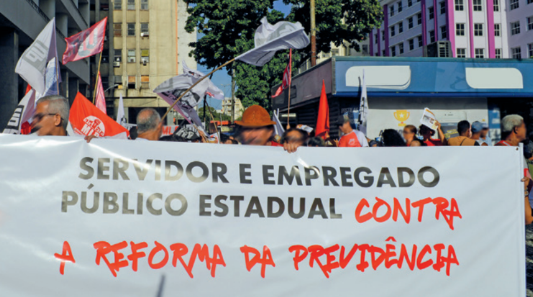

Em 8 de janeiro de 2023, uma multidão de brasileiros se dirigiu até a Praça dos Três Poderes em Brasília (DF) e invadiu as sedes das principais instituições da República brasileira. Dentro do Palácio do Planalto (sede da Presidência da República), do Congresso Nacional (sede do Poder Legislativo) e do Supremo Tribunal Federal (órgão máximo do Poder Judiciário), os manifestantes destruíram móveis, relíquias históricas e símbolos da República.
A maioria dos manifestantes se mostrava indignada com o resultado das eleições presidenciais de 2022, contestava a validade do pleito e reivindicava que o candidato não eleito fosse conduzido à presidência por meio de uma intervenção militar. Os atos de 8 de janeiro foram interpretados juridicamente como uma tentativa de golpe contra a democracia, e várias pessoas foram presas, não apenas por causarem danos ao patrimônio público, mas por conspirarem contra as instituições democráticas.
Como estudaremos ao longo deste capítulo, desde a instauração da República no Brasil, em 1889, a democracia foi parcialmente praticada e totalmente suspensa em vários momentos da história. Por esse motivo, muitos analistas argumentam que uma parcela grande da população brasileira ainda é pouco acostumada ao exercício da cidadania e tem pouco apreço pelos princípios e instituições democráticos, recorrendo facilmente ao autoritarismo.
Manifestante quebrando janela do
Palácio do Planalto durante os atos de
8 de janeiro de 2023, em Brasília (DF).
Uma breve história da cidadania
A cidadania tem uma “pré-história”. Na Grécia Antiga, cidadão era o nome dado ao membro da cidade. Os cidadãos gregos eram aqueles responsáveis pela coletividade, com o poder de atribuir e distribuir os postos ligados a funções públicas, envolvendo, por exemplo, a justiça e a política. Portanto, os cidadãos cuidavam da administração da cidade-Estado grega, a pólis. Vem daí o termo política, que significava a “intenção de se cuidar bem da pólis, da cidade”.
Não estamos aqui preocupados em discutir exatamente como era o funcionamento de uma cidade-Estado grega ou de outros povos da Antiguidade, porque a ideia de “cidade-Estado” difere muito do que seriam as cidades contemporâneas. Queremos ressaltar a origem dessas palavras, utilizadas até hoje.
Quando falamos em “pré-história” da cidadania, existe um motivo para isso. Como chamamos a atenção, o cidadão é aquele que possui e goza de determinados direitos. Ter direitos significa ter a capacidade e a autonomia para usufruir de determinados benefícios legais garantidos pelo Estado aos seus habitantes, como ser possuidor de documentos, tais como certidão de nascimento, carteira de identidade, título de eleitor e carteira de motorista.
Poder ter acesso a esses documentos são direitos civis de cada pessoa. O termo civil deriva do latim civitas, que também significa “cidadão ou o habitante da cidade”. No Brasil, a certidão de nascimento é um direito adquirido logo ao nascer; já a carteira de identidade só é adquirida posteriormente. A carteira de motorista, no entanto, somente pode ser obtida aos 18 anos. É nessa idade que o indivíduo começa a adquirir o que chamamos de cidadania plena, ou seja, a capacidade legal de responder pelos próprios atos diante das autoridades públicas.
Philipp von Foltz. A Era de Péricles, 1852. Impressão, 9,8 cm x 12 cm.
Voltando ao que comentamos antes: na Grécia Antiga, poucos eram os indivíduos que tinham acesso a uma cidadania plena. Na verdade, somente aqueles que eram homens gregos, adultos e, em alguns casos, proprietários de terras detinham o poder de decidir os rumos da cidade. Estavam excluídos da cidadania grega as mulheres, os jovens, os pobres, os estrangeiros e, é claro, os escravizados.
Essa “cidadania restrita” também era característica dos primórdios da Roma Antiga, onde somente aqueles que eram considerados nobres – os patrícios – acumulavam direitos, tais como a propriedade da terra e o usufruto do poder político. Já os não nobres – os plebeus – provocaram diversas revoltas contra o poder constituído, para que tivessem acesso a alguns direitos. Eles até conseguiram, mas sempre de maneira restrita. No entanto, só o fato de os plebeus terem conseguido o acesso a alguns direitos já faz de Roma uma sociedade mais aberta do que a aristocrática Grécia.
O nascimento da cidadania moderna
Em 1789, a Revolução Francesa, que foi um marco para a história dos direitos e da cidadania, deu origem a uma Constituição elaborada pelos revolucionários. O documento era
intitulado Declaração Universal dos Direitos do Homem e do Cidadão e dizia, entre outras
coisas, que “todos nascem livres e são iguais perante a lei”. O lema da Revolução Francesa
era liberdade, igualdade e fraternidade. No entanto, a revolução não era de todos: tratava-se de uma revolução burguesa, na qual uma classe social em ascensão, já economicamente
muito poderosa, começava a adquirir também o poder político, passando a governar a nação
francesa e, em consequência, ter mais direitos do que o restante do povo trabalhador. Não é
à toa que um dos mais importantes direitos do homem e do cidadão era o direito à propriedade – que poucos detinham.
A história das etapas da Revolução Francesa mostra o quanto a luta pelos direitos dos
indivíduos custou muitas vidas. Na maior parte do tempo, a alta burguesia fez valer sua força
e exerceu o poder com mãos de ferro. Um exemplo era o direito de eleger os governantes da
nação, em substituição à realeza: foi um direito universal praticado por muito pouco tempo, no
período do governo jacobino. Durante quase todo o processo de revolução, o voto era censitário, ou seja, restrito a quem tinha determinada renda e propriedades.
De qualquer forma, a Revolução Francesa, assim como aquelas que ocorreram anteriormente, as revoluções inglesas, no século XVII, e a estadunidense, também no século XVIII,
forneceram os alicerces da cidadania
das sociedades contemporâneas.
Ideias como o respeito aos direitos
dos indivíduos, de liberdade e de
igualdade entre todos puderam ser
almejadas com mais intensidade com
base nessas experiências concretas.
A obra retrata a assinatura da
Primeira Constituição dos Estados
Unidos, ocorrida em 1787. A carta
constitucional estadunidense passou
por várias emendas nos anos seguintes
e foi um documento importante para
a garantia de direitos civis, como a
liberdade de expressão e a liberdade
religiosa. Apesar disso, ela não
mencionava a escravidão, abolida
naquele território apenas em 1865.
Essas revoluções foram verdadeiros “laboratórios” para as principais ideias defendidas por pensadores iluministas, como o inglês John Locke (1632-1704), o suíço Jean-Jacques Rousseau (1712-1778) e os franceses Montesquieu (1689-1755) e Alexis de Tocqueville (1805-1859). Esses filósofos serão estudados mais detidamente no próximo capítulo, quando serão abordadas as teorias e as origens do Estado Moderno. Suas obras serviram de referência para aquele momento da história e fornecem a base para as ideias que regem a sociedade em que vivemos.
O grande obstáculo a uma igualdade de fato, como veremos a seguir, foi o conjunto de interesses distintos e conflitantes entre os seres humanos, de acordo com sua posição social na organização da sociedade capitalista.
Direitos civis, políticos e sociais
Alguns pensadores entendem a história da sociedade capitalista como uma história marcada pela evolução dos direitos do ser humano, de caráter irreversível. Entre esses autores está o sociólogo inglês T. H. Marshall (1893-1981).
Tomando a Inglaterra como modelo, T. H. Marshall procurou mostrar que, desde
o século XVIII, teria acontecido uma “ampliação progressiva” da cidadania.
Primeiro, no século XVIII, teriam se constituído os direitos civis,
relacionados à liberdade individual e às relações de trabalho. Depois,
no século XIX, a cidadania passou a compreender os direitos políticos,
ou seja, os trabalhadores passaram a ter o direito de participar do exercício
do poder político. Por fim, já no século XX, o Estado de Bem-Estar Social
inglês significou a conquista dos direitos sociais, que deram acesso universal à distribuição da riqueza produzida no país, por meio da elaboração de políticas sociais.
A experiência do Estado de Bem-Estar Social nos países capitalistas
T. H. Marshall estudou a formação do Estado de Bem-Estar Social – o Welfare State –, considerado, durante parte do século XX, um exemplo de que o capitalismo era o sistema econômico, político e social ideal, capaz de garantir verdadeiramente a prosperidade e uma vida segura, livre e igualitária para todos os seus cidadãos.
Entre o fim da Segunda Guerra Mundial e o início da década de 1970, os países capitalistas mais avançados, então chamados de “primeiro mundo”, conheceram níveis de progresso e de riqueza nunca vistos antes. E o Estado era o principal responsável por prover a subsistência digna dos seus cidadãos, garantindo para todos educação e saúde públicas, saneamento, transporte, rede de energia elétrica. O Estado de Bem-Estar, portanto, tinha como objetivo a garantia de pleno emprego, salários dignos e acesso a direitos para todos os indivíduos.
Ao lado dessas políticas sociais de caráter geral e universalizantes, havia também a preocupação política no sentido
de que a população acompanhasse de alguma forma a gestão pública, por meio do aprofundamento da democracia como
regime de governo, com partidos políticos representativos, inclusive organizados por trabalhadores vinculados a sindicatos.
A experiência inglesa do Estado de Bem-Estar Social durou cerca de 30 anos. Por esse motivo, o período foi chamado de
os “Trinta Anos Gloriosos” do capitalismo.
O movimento de pessoas nessa rua comercial de Londres
reflete o poder de compra da população no período.
Inglaterra, cerca de 1965.
Nesse percurso social e histórico que foi objeto de reflexão de T. H. Marshall, é importante destacar que o final da Segunda Guerra Mundial, em 1945, e a consequente criação da
Organização das Nações Unidas (ONU) levaram à elaboração de um documento fundamental
para a atualização e a reafirmação dos direitos de cidadania em um mundo traumatizado
pelos horrores recentes da guerra. Trata-se da Declaração Universal dos Direitos Humanos,
aprovada pela ONU em dezembro de 1948. O documento, que se inicia com a afirmação
“Todas as pessoas nascem livres e iguais em dignidade e direitos” (art. 1o), assume a condição de um tratado que servirá de
referência para a elaboração de todas as constituições nacionais dos países ocidentais que procuraram consolidar regimes
baseados na democracia representativa, ou seja, na adoção do
sufrágio universal como método de controle do poder político
por parte dos cidadãos.
O conceito de direitos humanos que é afirmado nesse processo, diferentemente da definição mais genérica baseada no
Iluminismo dos séculos XVII e XVIII, especificava que os direitos
dos indivíduos deveriam ser exercidos sem “distinção de qualquer espécie” (art. 2o) e implicava o enfrentamento de quaisquer formas de discriminação – em relação a classe social, etnia,
raça, orientação sexual e religião, assim como a posicionamento
ou opinião política. Na prática, essas discriminações continuaram ocorrendo no mundo. O documento da ONU, no entanto, é
uma referência, um parâmetro que serve de modelo para a construção da cidadania e dos direitos.
Tomando como ponto de partida a Declaração Universal dos Direitos Humanos, nas décadas seguintes diversos
documentos e convenções da ONU deliberaram quanto à identificação mais precisa de direitos humanos, contribuindo para a elaboração de políticas nesse sentido por cada Estado Nacional. Dessa forma, o direito internacional
estabelecido pelas Nações Unidas, seguindo a linha traçada nessa nova conjuntura Pós-Guerra, ainda em 1948,
levou a organização a deliberar e propor políticas de prevenção e repressão ao crime de genocídio, bem como políticas voltadas para a eliminação de todas as formas de discriminação racial (em 1965) e discriminação contra as
mulheres (em 1979).
Em 1984, aprovou-se a Convenção Contra a Tortura e Outras Penas ou Tratamentos Cruéis, Desumanos ou Degradantes. Depois, em 1989, foi a vez de os países-membros da ONU aprovarem os termos da Convenção sobre os
Direitos da Criança. Em 2006, por fim, foram expressos internacionalmente os princípios que devem proteger os
direitos das pessoas com deficiência.
Hoje, há teóricos do Direito que consideram que a classificação elaborada por Marshall na década de 1960
não atenderia mais às necessidades dos cidadãos em relação às suas demandas por direitos humanos. Assim,
defendem uma nova classificação, que ordenaria os direitos em cinco gerações diferentes. Essa nova classificação foi denominada teoria das gerações dos direitos fundamentais. As gerações correspondem a determinados
direitos, da seguinte forma:
• Direitos de primeira geração: direitos relacionados às lutas históricas da humanidade, correspondendo aos
direitos civis e políticos. Os teóricos liberais defendem que esses direitos estão relacionados à liberdade do
indivíduo, citando como exemplos os direitos à vida, à segurança e à propriedade.
• Direitos de segunda geração: correspondem aos direitos sociais e coletivos, relacionados à defesa da igualdade
e vinculados diretamente ao período histórico de surgimento do Estado de Bem-Estar Social. Podemos citar
como exemplos os direitos à educação, à saúde e ao trabalho.
• Direitos de terceira geração: direitos voltados para a humanidade como um todo. Um bom exemplo é a defesa
do meio ambiente, pois sua degradação afeta o planeta inteiro. Podem ser incluídas também como direitos de
terceira geração as leis de proteção de crianças e adolescentes e de preservação de tudo que pode ser considerado patrimônio histórico e cultural da humanidade – mesmo que pertença à história de determinado povo
ou nação.
Fala-se também em direitos de quarta e de quinta gerações. Estes, no entanto, são mais controversos e carecem de definições precisas por parte dos teóricos voltados para o tema. Entre os de quarta geração, por exemplo,
estão relacionados os direitos à informação e à democracia. Outros remetem a quarta geração de direitos às questões éticas que envolvem, por exemplo, a utilização de técnicas de manipulação genética.
Por fim, os direitos de quinta geração seriam aqueles voltados para a realidade “virtual”, ligados ao avanço
tecnológico proporcionado pela informática e pela cibernética e às questões éticas envolvidas na circulação de informações e imagens nas redes sociais. Dessa forma, nenhum indivíduo poderia sofrer exposição pública de sua imagem sem sua prévia autorização expressa, por exemplo. Trata-se de um direito individual, portanto. Em um campo
oposto, o jurista paraibano Paulo Bonavides (1925-2020), de grande reconhecimento na área do Direito, defende “o
direito da humanidade à paz” como representante da quinta geração – neste caso, Bonavides propõe a redefinição
de um direito que é considerado de terceira geração.
Senadores e
representantes
da sociedade civil
comemoram a aprovação
do Marco Civil da
Internet no plenário do
Senado Federal. Brasília
(DF), 2014.
O Marco Civil da
Internet, aprovado no
Congresso Nacional
em 2014, garante
a privacidade e a
proteção de dados
pessoais, mas
também autoriza
a disponibilização
de dados mediante
ordem judicial em
caso de investigações
de crimes cometidos
nas redes.
Direitos sociais e cidadania em tempos de neoliberalismo
Como estudamos no Capítulo 8, a partir dos anos 1970, os países capitalistas ocidentais
passaram por uma grave crise econômica, que colocou em risco o modelo de desenvolvimento
existente, baseado na exploração industrial do petróleo como combustível. Os teóricos capitalistas, que desde a Segunda Guerra Mundial criticavam o Estado de Bem-Estar por ser extremamente dispendioso e contrário ao que julgavam serem as leis naturais da economia, viram
nessa nova conjuntura a chance de colocar em prática suas ideias.
Inspirados e assessorados por pensadores neoliberais, como o alemão Friedrich Hayek
(1899-1992) e o estadunidense Milton Friedman (1912-2006), novos governantes foram eleitos
prometendo reformas econômicas que afastassem os países mais ricos da crise. Assim, em
1979, a Inglaterra escolheu Margaret Thatcher (1925-2013) como primeira-ministra e, em 1980,
os Estados Unidos elegeram Ronald Reagan (1911-2004) como presidente. Inaugurava-se uma
nova era, na qual as conquistas sociais e trabalhistas do Welfare State começaram a ser desmontadas. Passamos, desde então, a viver sob a hegemonia do neoliberalismo.
A chegada ao poder político, nos países europeus e nos Estados Unidos, dos defensores
do pensamento neoliberal determinou a execução de cortes de gastos que afetaram políticas
sociais fundamentais, como os financiamentos da saúde e da educação públicas.
As políticas neoliberais implicaram também a redução drástica de direitos trabalhistas, que
precisaram se adequar à etapa de acumulação flexível da economia capitalista, incidindo inclusive nas condições de aposentadoria dos trabalhadores em geral, que passaram a experimentar um processo de precarização crescente.
A reação da classe trabalhadora ocorreu em diversos países europeus, com a organização
de manifestações de protestos gerais, além de greves nos serviços públicos.
Ao lado da população negra estigmatizada dos subúrbios, a classe trabalhadora europeia
mais tradicional também tem atravessado momentos de precarização das condições de vida,
agravadas pelas políticas de reforma previdenciária.
previdenciária. Na Alemanha, por exemplo, em 2007, uma
reforma estabeleceu a elevação progressiva da idade
de aposentadoria de 65 para 67 anos, definindo também uma idade mínima para solicitar esse benefício.
Já na França, houve reforma similar em 2010, acrescida
do aumento do tempo de contribuição previdenciária
de 40 para 43 anos, a ser implementado gradualmente até 2035.
Alguns exemplos das reações da classe trabalhadora foram
os protestos que abalaram os subúrbios da França no final
de 2005, em imagens que correram o mundo, configurando
a maior revolta urbana no país desde maio de 1968. Naquele
contexto, o amplo processo de empobrecimento atingiu de
forma bastante grave a população periférica, sobretudo os
descendentes de imigrantes africanos, oriundos das ex-
colônias francesas, vítimas de crescentes ações racistas e
de xenofobia.
Esse processo de reforma em curso gerou
uma grande mobilização por parte dos sindicatos
franceses, que paralisaram o país diversas vezes.
Em março de 2023, no décimo dia de greve geral
nacional, em um movimento iniciado em janeiro,
milhares de manifestantes foram às ruas, com a
repetição de diversas cenas de violência no confronto com as forças policiais. Em maio de 2023,
20 mil trabalhadores tomaram as ruas de Bruxelas,
na Bélgica. No mesmo período, em Genebra,
Suíça, a paralisação foi dos aeroviários, assim
como em Berlim, em Lisboa e em outras capitais;
na Romênia, houve paralisação dos professores.
Todos esses movimentos tiveram como pauta a
melhoria das condições de trabalho, precarizadas
pelas políticas de austeridade de cunho neoliberal implementadas nos países europeus.
Manifestação de aposentados e
pensionistas contra o aumento do
custo de vida e reformas nas regras.
Porto, Portugal, 2023.
A cidadania no Brasil: uma “corrida de obstáculos”
Podemos dizer que a construção da cidadania no Brasil tem um longo e tortuoso caminho, desde a independência de Portugal, em 1822, até os dias de hoje.
Durante o regime monárquico brasileiro, no século XIX, praticamente não se pôde falar
em direitos. O voto, por exemplo, tinha caráter censitário: somente homens adultos que
possuíssem bens e propriedades participavam do poder político. Mas a manutenção da
escravidão era a face mais cruel de uma sociedade marcada pela extrema desigualdade.
O fim da escravidão, em 1888, e a Proclamação da República, no ano seguinte, não provocaram qualquer alteração nessa realidade. A proibição do voto para pessoas analfabetas
até 1988 manteve a maior parcela da população brasileira desprovida de direitos políticos.
Já o poder político local continuou nas mãos dos grandes proprietários de terras. Eram
essas lideranças locais, os “coronéis”, que controlavam, além do voto, o acesso aos cargos
públicos existentes e, juntamente com os governadores, acabavam também elegendo o
presidente da República.
Os problemas sociais eram tratados com repressão policial, como em Canudos, entre
1896 e 1897; na Revolta da Vacina, em 1904; e nas greves operárias que pararam as cidades
do Rio de Janeiro e de São Paulo na década de 1910. Mesmo o fim oficial da escravidão
não impediu que os marinheiros de baixa patente – pobres e negros – continuassem sendo
punidos com castigos físicos, como ficou evidente na Revolta da Chibata, liderada por João
Cândido (1880-1969), em 1910.
Podemos afirmar, portanto, que continuava inexistindo no Brasil qualquer indício do que
chamamos de cidadania. A oligarquia que governou o país durante as primeiras décadas da
República foi destituída com a Revolução de 1930, organizada e comandada por setores dissidentes da própria elite. Um primeiro avanço, porém, deve ser registrado: a conquista do voto
feminino em 1932, incorporado à Constituição de 1934.
Mas os direitos políticos duraram pouco tempo, já que, em 1937, Getúlio Vargas implantou
a ditadura do Estado Novo, inspirada pela onda do nazifascismo que tomava conta da Europa.
Paradoxalmente, foi no período Vargas, de 1930 a 1945, que uma vasta legislação social começou a ser introduzida, atingindo principalmente os centros urbanos:
• Em 1932, foi decretada a jornada de oito horas diárias de trabalho para trabalhadores do
comércio e da indústria.
• No ano seguinte, houve a regulamentação do direito de férias.
• A Constituição de 1934, além de estender o voto às mulheres, determinou a criação de um
salário mínimo, calculado para satisfazer as necessidades básicas de uma família (mas ele
somente foi adotado em 1940).
• A Previdência Social começou a ser organizada em 1933, com a criação de institutos por
categorias profissionais (marítimos, bancários, comerciários, entre outros).
O cientista social Wanderley Guilherme
dos Santos (1935-2019) formulou o termo
cidadania regulada para se referir a esse
período da história brasileira: somente
tinham acesso aos direitos sociais os
trabalhadores urbanos vinculados a
categorias reconhecidas pelo Estado,
que controlava os sindicatos, nomeando suas direções e garantindo-lhes a
sobrevivência econômica por meio de
impostos obrigatórios.
Manifestação de trabalhadores em apoio ao Estado Novo de Getúlio Vargas. Rio de Janeiro (RJ), 1940.
Apesar dos entraves em direitos políticos,
o período do Estado Novo fortaleceu
políticas sociais e, principalmente,
trabalhistas, como a Consolidação das Leis
do Trabalho (CLT), conjunto de normas
aprovado em 1943 para regulamentar as
relações trabalhistas no Brasil.
Assim, diferentemente da Inglaterra estudada por Marshall, no Brasil os direitos sociais
foram implementados antes dos direitos civis, que continuavam precários, e dos direitos
políticos, que praticamente deixaram de existir durante o regime autoritário de 1937 a 1945.
Ressalte-se que esses direitos sociais não se apresentaram como uma conquista das lutas dos
trabalhadores – apesar de estarem na pauta do forte movimento grevista dos anos 1920 –, mas,
sim, como uma ação autoritária, de cima para baixo. Como uma concessão do chefe do Estado,
autointitulado “pai dos pobres”.
Os direitos civis e políticos somente seriam inaugurados no Brasil durante a primeira experiência democrática após o fim do Estado Novo, com a República que se consolidaria com
a Constituição de 1946. Tal Constituição manteve os direitos sociais do período anterior –
mesmo aqueles herdados da legislação autoritária, como o direito de greve, que só poderia ser
considerado legal se autorizado pela Justiça do Trabalho. Além disso, com a permanência dos
graves problemas sociais e do poder dos grandes proprietários de terra, os direitos políticos
sofreram sérias restrições logo em 1947, quando o Partido Comunista teve seu registro cassado, vítima da Guerra Fria no pós-Segunda Guerra Mundial.
Em 1964, também no contexto da Guerra Fria, um novo golpe de Estado implantou a
Ditadura Civil-Militar, que durou até 1985. Durante a maior parte desse período, os direitos
civis e políticos foram restringidos com violência. Os direitos sociais também foram atingidos,
já que o salário mínimo sofreu forte queda em seu poder de compra, em consequência do
baixo crescimento econômico (com uma breve exceção entre o final dos anos 1960 e início dos
1970, conhecido como o período
do “milagre econômico”) e da
impossibilidade de organização
sindical autônoma por parte dos
trabalhadores.
O Estado militar constituiu uma máquina repressiva poderosa, disposta a calar qualquer voz que se levantasse em oposição. Foi um tempo de prisões arbitrárias, torturas, assassinatos e exílios políticos, atingindo diversos artistas, lideranças políticas pré-1964 e lideranças estudantis que organizaram a luta armada contra o regime.
A partir de 1978, pressionados pelo estrangulamento econômico, trabalhadores metalúr-
gicos e de outras categorias profissionais começaram a se organizar e a enfrentar o aparato
repressivo do Estado. Obteve-se
a abertura política, com a legali-
zação de novos partidos, o fim da
censura à imprensa e a anistia a
presos políticos e a exilados. Era
a retomada da luta pelos direitos
civis do povo.
Em 1984, comícios com mais de um milhão de pessoas, como no Rio de Janeiro e em São Paulo, exigiram o retorno das eleições diretas para a Presidência da República. Foi o movimento que ficou conhecido como Diretas Já.
A redemocratização e a Constituição Cidadã
Em 1988, foi elaborada uma nova Constituição, apelidada de “cidadã” por buscar garantir as
principais reivindicações dos movimentos sociais que haviam eclodido no país a partir de 1979.
Dentre as conquistas inseridas no corpo da nova Constituição, podemos destacar:
• a universalização do direito ao voto, tornando-o facultativo às pessoas analfabetas e aos
jovens a partir da idade mínima de 16 anos;
• a fixação de um salário mínimo como limite inferior para pagamento de aposentadorias e
pensões;
• a extensão da Previdência aos maiores de 65 anos e a todas as pessoas com deficiência
física, mesmo que não tenham contribuído anteriormente;
• a ampliação da licença-maternidade para 120 dias e a inclusão legal do direito de cinco dias
à licença-paternidade;
• o estabelecimento da jornada semanal de trabalho ao limite de 44 horas, o abono de férias
correspondente a 1/3 do salário e o 13o salário para aposentados;
• a garantia de demarcação das
terras indígenas, assim como o
reconhecimento legal dos direitos de propriedade às terras
tradicionalmente ocupadas por
comunidades de remanescentes
quilombolas;
• a definição da tortura e do racismo como crimes inafiançáveis;
• e, por fim, a criação do Sistema
Único de Saúde (SUS), que garantiu o acesso universal à saúde
pública gratuita para todos os
brasileiros, sistema regulamentado em lei dois anos após a promulgação da Constituição.
Representantes de
povos indígenas
acompanhando
sessão da
Assembleia
Constituinte
no Plenário da
Câmara. Brasília
(DF), 1987.
Em 1989, a população brasileira votou para presidente da República em eleições diretas
pela primeira vez após 29 anos. As eleições presidenciais daquele ano foram as primeiras
eleições nacionais com o retorno do pluripartidarismo, conforme estabelecia a Constituição
de 1988. Com o sistema político organizado dessa forma, diferentes partidos, com diferentes
orientações políticas e projetos para o país disputaram as eleições. Ocorreram também naquele ano os primeiros debates presidenciais televisionados da história do Brasil. As opiniões
e notícias sobre os candidatos divulgadas pela imprensa tiveram grande influência na corrida
presidencial, que deu vitória ao candidato Fernando Collor de Mello (1949-).
Debate entre os candidatos à Presidência da
República Fernando Collor de Mello (à esquerda)
e Luiz Inácio Lula da Silva (à direita) no segundo
turno das eleições presidenciais, comandado pelo
jornalista Boris Casoy na TV Bandeirantes. São Paulo
(SP), 1989.
No segundo turno das eleições presidenciais
de 1989, ocorreram dois debates entre os
candidatos, organizados conjuntamente por
quatro das principais emissoras de televisão
do Brasil à época: Globo, SBT, Manchete e
Bandeirantes. O primeiro debate aconteceu na
TV Manchete, no Rio de Janeiro, e o segundo
na TV Bandeirantes, em São Paulo.
A exibição do debate, editado pela Rede Globo,
gerou controvérsias e acusações de que teria
influenciado o resultado das eleições.
Você consegue imaginar o quão nova era toda aquela situação para a população brasileira?
As últimas eleições diretas para presidente da República tinham ocorrido em 1960. Isso significa que um jovem que tivesse 17 anos naquele momento votaria para presidente pela primeira
vez aos 46 anos. Depois de décadas de censura, ausência de liberdade de expressão e de
liberdade de manifestação aberta de opinião política, foi um grande desafio para a população
brasileira voltar a exercer a cidadania plena, como, entre outras ações, julgar com autonomia
as informações que recebia.
O mandato do primeiro presidente eleito após a Ditadura Civil-Militar durou pouco mais de
dois anos. Em 1992, Collor foi destituído do poder por meio do impeachment. Mecanismo legal
previsto pela Constituição, o processo de impeachment permite ao Poder Legislativo impedir o
representante do Poder Executivo de continuar exercendo a função quando ele é acusado de
praticar atos contrários às responsabilidades do cargo. Tal episódio também foi simbólico para
a democracia brasileira, pois sinalizava uma retomada da autonomia entre os poderes depois
de décadas em que o poder de legislar esteve nas mãos do próprio Poder Executivo.
Direitos e cidadania no novo milênio: consolidação ou enfrentamento ao neoliberalismo?
A redemocratização brasileira veio acompanhada da implementação de políticas de caráter
neoliberal pelos governos eleitos para os mandatos de 1989 (Collor), 1994 e 1998 (Fernando
Henrique Cardoso). De certa forma, essas políticas iam na contramão das propostas de ampliação de direitos, sobretudo direitos sociais, previstas pela Constituição de 1988.
O controle da inflação promovido pela implementação do Plano Real, no primeiro governo de
Fernando Henrique Cardoso (FHC), implicou o aumento do poder de compra do salário mínimo,
trazendo melhorias para a qualidade de vida dos trabalhadores. Apesar disso, seus governos
foram marcados por políticas que visavam seguir uma agenda neoliberal internacional, o que envolveu a privatização e a venda de empresas estatais a organizações multinacionais, além da redução dos investimentos públicos em áreas sociais como saúde, educação, saneamento, previdência,
transporte, habitação e assistência social.
Após a Era FHC, o país elegeu, em 2002 e 2006, o ex-metalúrgico Luiz Inácio Lula da
Silva (1945-) como presidente da República. Os governos de Lula foram reconhecidos internacionalmente como governos bem-sucedidos na garantia de direitos sociais básicos, com
destaque para as políticas de combate à fome, de distribuição de renda, de ampliação do acesso à energia
elétrica e ao abastecimento de água, além da ampliação do acesso ao Ensino Superior.
As políticas sociais iniciadas nos governos Lula
tiveram continuidade nos governos de Dilma Rousseff
(1947-), entre 2011 e 2016, quando também houve
avanços em outros direitos, como o acesso à informação
sobre os serviços públicos e sobre violações de direitos
humanos praticados durante o período da Ditadura Civil-Militar, por meio da instauração da Comissão Nacional
da Verdade.
Cidadã mostrando
o cartão do Bolsa
Família em frente à
sua casa em área
rural. Poções (BA),
2016.
Em 2016, Dilma Rousseff foi destituída de
seu segundo mandato por meio do impeachment, assim
como ocorreu com Collor.
Os governos que se seguiram, sob as presidências de Michel Temer (1940-), de 2016 a
2018, e Jair Bolsonaro (1955-), de 2019 a 2022, foram marcados pelo retorno da agenda neoliberal e implicaram cortes de gastos em setores estratégicos como saúde e educação, além de
afrouxamento das leis trabalhistas.
Propomos, a seguir, um panorama dos principais avanços e retrocessos na garantia da
cidadania no Brasil nos últimos anos. Para efeito de organização da sua leitura, vamos destacar
o que podemos definir como ampliação da cidadania na forma de aquisição de direitos,
seguindo as classificações teóricas que você estudou neste capítulo. Como a ideia é promover
uma reflexão sobre o tema, escolhemos como referência de análise a tipologia de direitos
definida por T. H. Marshall.
Direitos civis
Os direitos civis estão relacionados à garantia das liberdades individuais.
Em janeiro de 2023, foi sancionada a Lei no 14.532, que atualiza a Lei de Crime Racial, prevista desde 1989. Essa nova regra
equipara o crime de injúria racial ao crime de racismo.
A injúria racial consiste em ofender ou humilhar alguém com base em elementos referentes a raça, cor, etnia ou religião.
Até 2023, a injúria racial não era considerada um crime de racismo , pois entendia-se que o racismo ocorria apenas quando a
agressão se dirigisse a todo um grupo ou coletivo de pessoas.
Com a modificação na lei, a injúria racial, assim como qualquer outro crime de racismo, tornou-se crime inafiançável, isto é, que
não permite o pagamento de fiança para livrar-se do crime, podendo acarretar até cinco anos de prisão.
Essa lei implica também a proteção à liberdade religiosa, já que a maioria dos crimes de intolerância religiosa são praticados
contra as religiões de matrizes africanas, por meio da injúria racial.
Ato antirracista
em São Paulo
(SP), 2020.
Em relação às leis protetivas aos direitos das mulheres, como as de combate à violência doméstica e ao feminicídio, apesar dos inúmeros casos de violência noticiados frequentemente pelas mídias sociais, existe, desde 2006, a legislação que ficou conhecida
como Lei Maria da Penha (Lei no 11.340). Essa legislação protetiva apresenta o que pode
ser enquadrado como violência doméstica, determina a pena de prisão para os agressores e cria uma rede de proteção e de assistência para a mulher e seus dependentes em
situação de violência.
Ainda envolvendo a violência contra as mulheres, houve, em 2015, a inclusão no Código Penal brasileiro de uma nova modalidade de homicídio qualificado, definido como
feminicídio. A Lei no 13.104 define o feminicídio como o crime praticado contra a mulher
em razão da sua própria condição de sexo feminino, o que inclui os casos de violência
doméstica e familiar.
As leis servem como medida de proteção e não necessariamente impedem as práticas de violência contra as mulheres. O que importa para a Sociologia é entender o quanto
determinadas características das relações sociais no Brasil impuseram a necessidade de
elaboração de uma lei para combater a violência doméstica contra a mulher.
Maria da Penha (1945-) é farmacêutica e ativista pelos
direitos das mulheres. Ficou paraplégica após diversas
agressões realizadas pelo seu ex-marido e foi a
inspiração para a promulgação da lei contra a violência
doméstica, que leva seu nome.
E quanto aos direitos da população LGBTQIAPN+? Como destacamos anteriormente, a Declaração Universal dos Direitos Humanos, de 1948, afirma, em seu artigo 1o, que “todas as pessoas nascem livres e iguais em dignidade e direitos”. A Constituição
brasileira acompanha essa máxima ao afirmar que “todas as pessoas são iguais perante a lei”. A discriminação e a violência contra
a população LGBTQIAPN+, no entanto, são constantes em diversas partes do mundo, sendo o Brasil um dos destaques negativos.
Por esse motivo, em 2019, o Supremo Tribunal Federal decidiu equiparar os crimes de violência contra a população LGBTQIAPN+ ao
crime de racismo, ou seja, todos os atos de violência praticados contra essa população devem ser enquadrados da mesma forma
como são definidos legalmente os crimes de racismo.
Direitos políticos
Os direitos políticos referem-se à participação nos processos políticos, como o direito ao voto.
No debate sobre os direitos políticos vigentes no Brasil, é importante ressaltar que a atual Constituição federal foi aquela
que pela primeira vez determinou a total liberdade de reunião e de organização de partidos políticos, desde que se cumpram
determinadas regras básicas, como a existência de certo número de filiados, a realização de convenções democráticas, a elaboração de um conteúdo programático com as propostas defendidas pelo partido, entre outras. A Constituição democrática
anterior à vigente, elaborada em 1946, não teve essa mesma característica durante muito tempo, em razão da proibição legal,
pouco depois da primeira eleição pós-Estado Novo, da organização do Partido Comunista Brasileiro, no contexto da Guerra
Fria, que marcou boa parte do século XX. Assim, os parlamentares comunistas eleitos foram cassados e as sedes do partido
foram fechadas.
O regime democrático brasileiro, no entanto, tem se mantido, apesar de alguns “sobressaltos”, como a situação que analisamos
na abertura deste capítulo.
Direitos sociais
Os direitos sociais são relacionados à garantia de condições dignas de vida, como moradia,
educação, saúde, trabalho, entre outros.
A saúde e a educação públicas vêm sendo bastante
afetadas pela limitação de recursos impostos por políticas
neoliberais nas últimas décadas no Brasil. Um dos exemplos mais conhecidos se vincula à Emenda Constitucional
no 95, que tramitou no Congresso com o apelido de “PEC
do Fim do Mundo”, em 2016. Sob a justificativa de garantir
um controle das despesas dos serviços públicos em geral,
essa legislação limitou os investimentos públicos do Estado em todos os setores da economia, instituindo um teto
de gastos, que incluiu as políticas públicas sociais, como
saneamento, educação e saúde.
O regime democrático brasileiro, no entanto, tem se mantido, apesar de alguns “sobressaltos”, como a situação que analisamos
na abertura deste capítulo.
Quanto ao direito ao trabalho, mesmo que a legislação trabalhista brasileira continue em vigor com as garantias dadas pela
Consolidação das Leis do Trabalho (CLT), da Era Vargas, reafirmadas pela Constituição de 1988, a flexibilização crescente das
regras de contrato de trabalho e as mudanças legislativas da aposentadoria têm afetado de forma decisiva a condição de vida
da classe trabalhadora.
Um exemplo disso é a Lei no 13.429, de 2017, que ficou conhecida como Lei da Terceirização. Ela flexibiliza a possibilidade de
contratação de funcionários por um curto período, para executar determinado serviço sem as garantias legais previstas na CLT,
ou seja, sem direito a férias e 13o salário, entre outras.

Em relação à aposentadoria, foi aprovada a Lei no 13.183, de 2015, que alterou
as regras de aposentadoria de todos os trabalhadores quanto à idade e ao tempo
de contribuição.
Essa lei determinou que
os trabalhadores que ingressarem no mercado de trabalho precisam que a soma de
sua idade com a sua contribuição previdenciária atinja o número 90, no caso das
mulheres, e 100, no caso dos homens.
Um exemplo concreto: se um homem tem
a intenção de se aposentar com 65 anos,
precisará trabalhar e contribuir para a Previdência por um total de 35 anos.